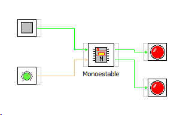

MONOESTABLE
Este bloque retada la activacion de su salida un tiempo que es el que se indica en la entrada Tiempo,
La señal de disparo se efectua en modo impulso en la Entrada
Las salidas que genera son la normal Salida y la negada Salida invertida.
Este es el contenido del bloque
este es un jemplo de utilización.
